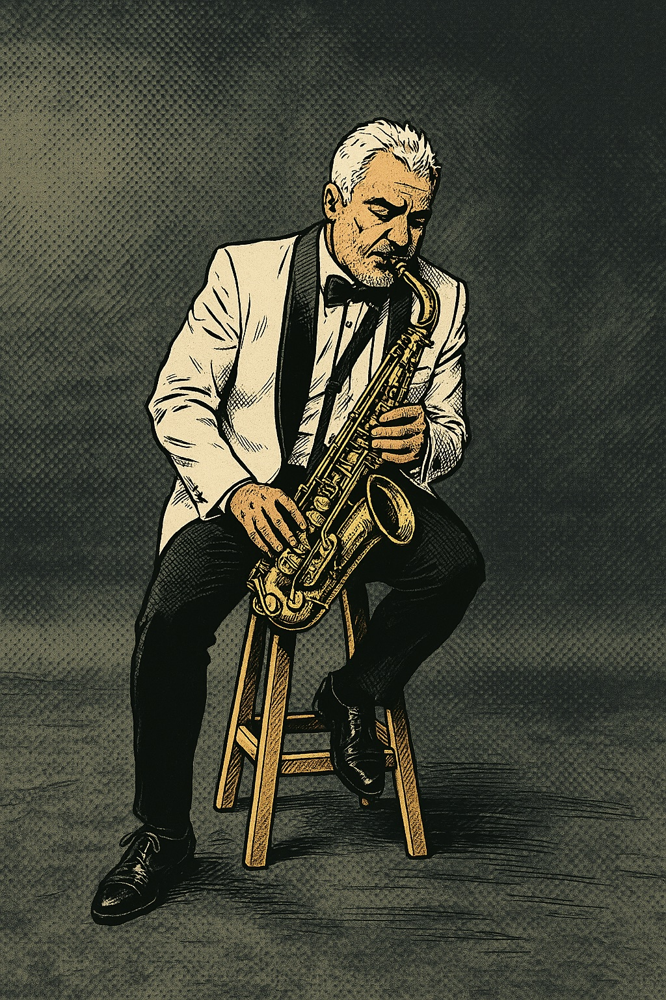

Aprender
La curiosidad abre puertas que todavía no sabemos nombrar.
Eduardo Arriola
Trabajo en los mercados eléctricos de México y Guatemala. En este espacio comparto proyectos de análisis y exploro cómo los datos, la programación y la inteligencia artificial pueden ayudarnos a entender mejor el sector.

La creatividad también
se entrena.
02 / Proyecto destacado
Mercados eléctricos · Datos públicos
Un proyecto para explorar los mercados eléctricos mediante datos públicos y herramientas de análisis. El desarrollo comienza en México, con una evolución prevista hacia Guatemala y Centroamérica.
Conocer el proyecto ↗Primer desarrollo
Análisis histórico de precios marginales locales del mercado eléctrico mexicano.
En desarrolloSoy Eduardo Arriola. Trabajo en los mercados eléctricos de México y Guatemala y me interesa comprender cómo se forman los precios, cómo cambian los fundamentales y qué preguntas pueden responderse mejor con datos.
Combino mi experiencia en mercados eléctricos con el aprendizaje práctico de programación e inteligencia artificial. Este sitio reúne proyectos que nacen de ese cruce: conocimiento del sector, herramientas de análisis y curiosidad por construir.
La música también forma parte de mi vida. El saxofón y el jazz tienen su propio espacio en Ed ArJi Jazz.
Ed ArJi Jazz ↗La curiosidad abre puertas que todavía no sabemos nombrar.
Las ideas adquieren valor cuando se convierten en algo real.
El conocimiento crece cuando circula y conecta a las personas.
04 / Proyectos e intereses
Además de los mercados eléctricos, exploro herramientas de programación, automatización e inteligencia artificial a través de proyectos prácticos.
Exploración activa
Herramientas, agentes y nuevas formas de colaborar con máquinas.
Construir para aprender
Pequeños proyectos que convierten preguntas en experiencias.
Disciplina creativa
Improvisación, sensibilidad y el placer de seguir practicando.
Siempre en beta
Ideas, libros y experimentos para ampliar la manera de pensar.
05 / Contacto
La conversación empieza aquí
Este espacio también busca conectar con personas interesadas en los mercados eléctricos, el análisis de datos y la tecnología aplicada al sector.